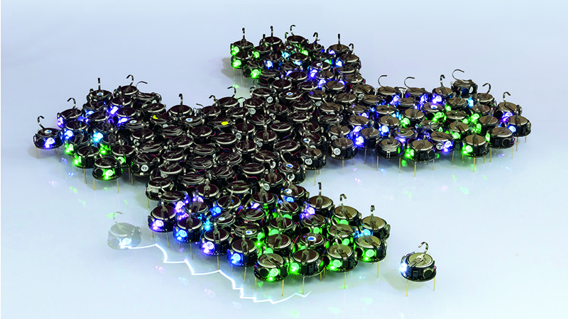

Neighbor-Based Decentralized Training Strategies for
Multi-Agent Reinforcement Learning
Nicoló Malucelli, Davide Domini, Gianluca Aguzzi, Mirko Viroli
ACM Symposium on Applied Computing @ SAC 2025, MLA Track

Multi-Agent Reinforcement Learning
MARL Examples


MARL Formalization
- In this paper, we consider partially observable networked markov decision process [1] as a tuple $(\mathcal{G}, \mathcal{S}, \mathcal{A}, \mathcal{O}, \mathcal{P}, \mathcal{R}, \gamma)$
- Where:
- $\mathcal{G} = (N, E)$ is a communication graph, where $N$ is the set of $n$ agents and $E \subseteq N \times N$ represents the communication links between agents. Time-varying graphs $\mathcal{G}_t = (N, E_t)$ can be used to represent communication evolving over time $t$.
- $\mathcal{S}$ is the global state space.
- $\mathcal{A} = \mathcal{A}^1 \times \dots \times \mathcal{A}^n$ is the joint action space, where $\mathcal{A}^i$ is the action space of agent $i$.
- $\mathcal{O} = \mathcal{O}^1 \times \dots \times \mathcal{O}^n$ is the joint observation space, where $\mathcal{O}^i$ is the observation space for agent $i$.
- $\mathcal{P}: \mathcal{S} \times \mathcal{A} \times \mathcal{S} \to [0, 1]$ is the state transition function, describing the probability of transitioning to a new state $s’ \in \mathcal{S}$ given the current state $s \in \mathcal{S}$ and joint action $a \in \mathcal{A}$.
- $\mathcal{R} = {\mathcal{R}^i}, {i \in N}$, where $\mathcal{R}^i: \mathcal{S} \times \mathcal{A} \to \mathbb{R}$ is the reward function for agent $i$.
- $\gamma \in [0, 1]$ is the discount factor.